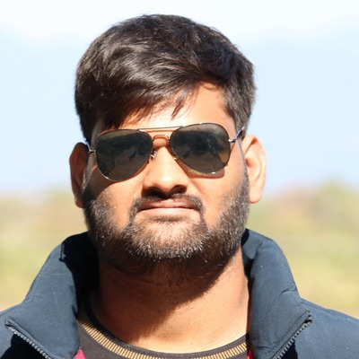

Anadi Goyal
Research Assistant
Dept. of CSE, IIT Guwahati
Bio
I am a first-year PhD Student in the Department of Computer Science & Engineering at IIT Guwahati, supervised by Prof. Chandan Karfa working on project related to AI Security with co-guidance from Prof. Anupam Chattopadhyay (NTU Singapore). I completed my B.Tech. at the Indian Institute of Technology Jodhpur (IITJ) in 2025, where I was an undergraduate researcher in the Department of Computer Science & Engineering, advised by Dr. Palash Das.
My research focuses on designing custom hardware accelerators for AI models, as well as exploring techniques to enhance the security of these models against adversarial attacks. I am passionate about hardware-software co-design and optimizing machine learning models for efficient and secure deployment.
Research Interests
- Efficient AI Inference
- Hardware Acceleration of Deep Learning
- Adversarial Robustness
- AI Security
- Hardware-Software Co-Design
- Vision Transformers
- FPGA/ASIC Design
News
Feb 2026 — Paper accepted at Design Automation Conference (DAC) 2026: STRAP-ViT.
Aug 2025 — Paper accepted at ACM TACO: HAVIT hardware accelerator for Vision Transformers.
Jan 2025 — Paper accepted at DATE 2025, IEEE. Received IEEE CEDA grant of ₹1,30,000 ($1500) to present in France.